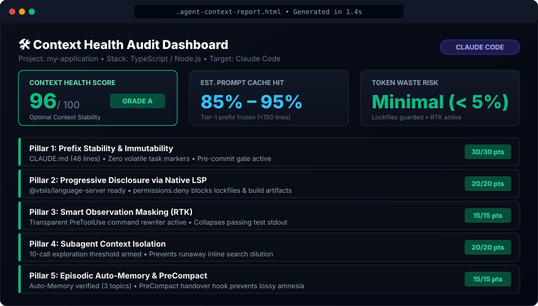
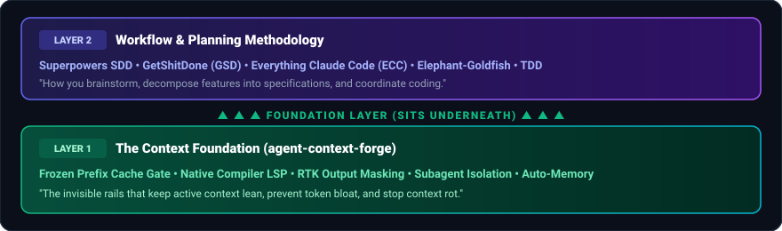

Choose which report graphic look fits best in the README.md under the Quickstart section.

npx agent-context-forge launches it in the browser—complete with the 96/100 score gauge, cache hit projections, and the 5 pillar status cards.
This replaces the ASCII diagram in the "The 2-Layer Stack: Harness vs. Methodology" section with a vector SVG graphic:
